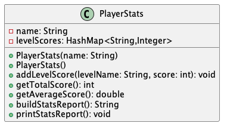

Lab 04 – Player Stats: Your First Class
In this lab, you will create your own class PlayerStats that models a Minecraft-style
player’s stats: their name and scores from different areas (Overworld, Nether, End, etc.).
You’ll then use a provided PlayerStatsMain class to test your code.
Resources: Understanding Fields and Classes
This lab is guided practice. Follow the steps, use the hints, and ask for help if you get stuck. The main goal is to get comfortable with:
- Defining your own classes and fields
- Writing constructors (default + parameterized)
- Adding methods that update and compute values
- Using
publicvsprivatefields and methods - Building and returning a formatted
Stringreport
Important Note: pelas follow the submission requirements specified below
0️⃣ Setup – Import the Starter Project
We’ll start from a prepared Eclipse project so that package names and files match what we’ll use later for autograding.
- Download the Lab 04 starter project zip Lab04.
- In Eclipse, go to File → Import… → Existing Projects into Workspace and select the unzipped Lab 04 folder.
-
You should see a project that already contains:
- a package named
lab - a starter file:
PlayerStatsMain.java PlayerStatsTest.javainlabTestpackage to test your implementation. You will need to uncomment code once you’ve created the new class with required methods
- a package named
Important:
- Do not change the package name.
- Do not rename
PlayerStatsMain. - You will add a new class
PlayerStatsin the same package (lab).
1️⃣ What Are We Building?
You’re modeling a Minecraft-style player stats card.
Each PlayerStats object will represent one player and store:
- the player’s name, e.g.
"MineMiner","Alex","Nova" - a collection of level scores, like:
"Overworld" → 1200"Nether" → 3000"End" → 5000
Your class will be able to:
- store scores for different Minecraft areas
- compute the total and average score
- build a single-line report string that summarizes the player’s stats
2️⃣ Create the PlayerStats Class & Fields
Step 1: Create the class
-
In the
PlayerStatsMainuncomment the first linePlayerStats mineMaster = new PlayerStats("MineMaster");. -
You will notice the error message asking you to create a new class named
PlayerStats. Follow the prompt and create it. - Add a javadoc and provide your name
package lab;
/**
* Represents the stats of a Minecraft player.
* Stores the player's name and their scores from different levels.
* @author Your Name Here
*/
public class PlayerStats {
// TODO: fields, constructors, and methods go here
}
Step 2: Add fields
Inside PlayerStats, add two private instance fields:
private String name;
// Each level name maps to its score
private java.util.HashMap<String, Integer> levelScores =
new java.util.HashMap<>();
name= the player’s name.levelScores= aHashMapmapping area names (keys) to scores (values).
Hint: Initializing levelScores at the field means every new
PlayerStats object automatically starts with an empty, ready-to-use map.
3️⃣ Constructors: Default and Parameterized (with Named Player)
You will write two constructors so we can create players with or without a given name.
public PlayerStats() {
// default constructor
}
public PlayerStats(String name) {
// constructor that sets the player's name
}
Default constructor
Pick a simple default name so that if no name is provided, the player still has some label. For example:
public PlayerStats() {
this.name = "Player1";
}
Parameterized constructor
public PlayerStats(String name) {
this.name = name;
}
Hints:
- Use
this.name = name;to distinguish the field from the parameter. - Do not reassign
levelScoresin the constructors; it’s already initialized at the field.
4️⃣ Adding Level Scores
Next, write a method that records a score for a specific area (e.g. Overworld, Nether, End).
public void addLevelScore(String levelName, int score) {
// TODO: store or update the score for this level
}
Hint: Use the put method on the HashMap:
public void addLevelScore(String levelName, int score) {
levelScores.put(levelName, score);
}
- If you call
addLevelScore("Overworld", 1000);and then lateraddLevelScore("Overworld", 2000);, the second call will replace the score for"Overworld".
5️⃣ Computing Total and Average Score
Add methods to compute the total and average scores across all levels:
public int getTotalScore() {
// sum all scores in levelScores
}
public double getAverageScore() {
// average of all scores in levelScores
}
Hints for getTotalScore()
public int getTotalScore() {
int sum = 0;
for (String level : levelScores.keySet()) {
sum += levelScores.get(level);
}
return sum;
}
Hints for getAverageScore()
public double getAverageScore() {
if (levelScores.isEmpty()) {
return 0.0;
}
return getTotalScore() / (double) levelScores.size();
}
Returning 0.0 for “no scores yet” is fine for this lab. Just be consistent.
6️⃣ Building a Stats Report String
Instead of printing in multiple places, we’ll have one method that builds and returns a single stats report string.
public String buildStatsReport() {
// Example format:
// "MineMiner: Overworld - 1200 Nether - 3000 End - 5000 - Total: 9200 - Average: 3066.6666666666665"
}
Behavior
- If there are no level scores yet, return something like:
(orPlayer1: (no scores yet)"Alex: (no scores yet)"if the name is Alex) - If there are scores, return a single-line report, for example:
Steve: Overworld - 1200 Nether - 3000 End - 5000 - Total: 9200 - Average: 3066.6666666666665
Hint: build the String step by step
public String buildStatsReport() {
String report = name + ":";
if (levelScores.isEmpty()) {
return report + " (no scores yet)";
}
for (String level : levelScores.keySet()) {
int score = levelScores.get(level);
report += " " + level + " - " + score;
}
report += " - Total: " + getTotalScore();
report += " - Average: " + getAverageScore();
return report;
}
Note: The order of levels may vary because HashMap does not guarantee order.
7️⃣ Printing the Stats Report
Finally, write a small helper method that prints the report to the console.
public void printStatsReport() {
System.out.println(buildStatsReport());
}
This method is void: it doesn’t return anything, it just prints the result of
buildStatsReport().
8️⃣ Using PlayerStats from PlayerStatsMain
Open PlayerStatsMain.java from the starter project. Uncomment and execute it. You should expect output like this:
MineMaster: VillageRaid - 2200 Nether - 3000 Overworld - 1200 End - 5000 - Total: 11400 - Average: 2850.0
Player1: Nether - 800 Overworld - 400 - Total: 1200 - Average: 600.0
9️⃣ Public / Private
As you write your class, make sure your design matches what we discussed in lecture and Worksheet 04:
- Fields (instance variables) should be private:
private String name; private java.util.HashMap<String, Integer> levelScores; - Methods that clients use should be public:
- constructors
addLevelScoregetTotalScoregetAverageScorebuildStatsReportprintStatsReport
Recall: private means only the class itself can access that field/method.
public means other classes (like PlayerStatsMain) can call it.
🔟 Turn-In Checklist
Before submitting:
- Execute
RunAllTests - Comment out your no-argument constructor in PlayerStats. The autograder only supports a single constructor.
Submit to Gradescope: PlayerStats.java.